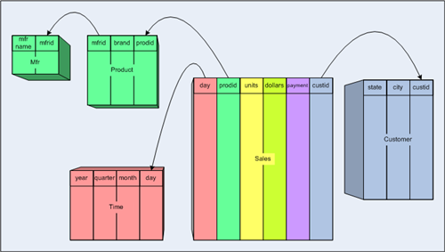
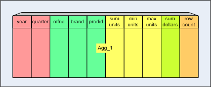
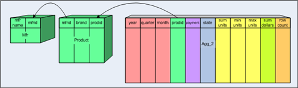
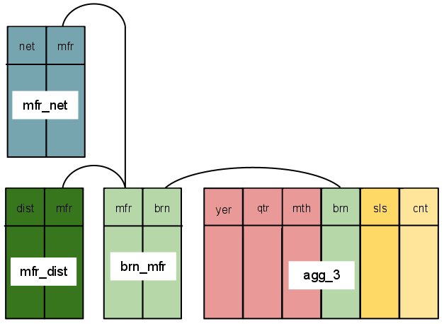

Unlike many OLAP servers, Mondrian does not store data on disk: it just works on the data in the RDBMS, and once it has read a piece of data once, it stores that data in its cache. This greatly simplifies the process of installing Mondrian, but it puts limits on Mondrian's performance when Mondrian is applied to a huge dataset.
Consider what happens when the CEO runs her Sales Report first thing on a Monday morning. This report contains a single number: the total sales of all products, in all regions, this year. In order to get this number, Mondrian generates a query something like this:
SELECT sum(store_sales)
FROM sales_fact,
time
WHERE sales_fact.time_id = time.time_id
AND time.year = 2005
and sends it to the DBMS. The DBMS takes several minutes to execute it: which is understandable because the DBMS has to read all of this year's records in the fact table (a few million sales, say) and aggregate them into a single total. Clearly, what is needed in this case, and in others like it, is a pre-computed summary of the data: an aggregate table.
An aggregate table coexists with the base fact table, and contains pre-aggregated measures built from the fact table. It is registered in Mondrian's schema, so that Mondrian can choose whether to use the aggregate table rather than the fact table, if it is applicable for a particular query.
Designing aggregate tables is a fine art. There is extensive research, both empirical and theoretical, available on the web concerning different ways to structure aggregate tables and we will not attempt to duplicate any of it here.
To explain what aggregate tables are, let's consider a simple star schema.

The star schema has a single fact table Sales, two measure
columns (units and dollars) and four dimension tables
(Product, Mfr, Customer, Time,
and Customer).
On top of this star schema, we create the following multidimensional model:
[Sales] has two measures [Unit sales] and
[Dollar sales][Product] has levels [All Products],
[Manufacturer], [Brand], [Prodid][Time] has levels [All Time],
[Year], [Quarter], [Month], [Day][Customer] has levels [All Customers],
[State], [City], [Custid][Payment Method] has levels [All Payment
Methods], [Payment Method]Most of the dimensions have a corresponding dimension table, but there are
two exceptions. The [Product] dimension is a snowflake
dimension, which means that it is spread across more than one table (in
this case Product and Mfr). The [Payment Method] dimension
is a degenerate dimension; its sole attribute is the
payment column in the fact table, and so it does not need a dimension
table.
Now let's create an aggregate table, Agg_1:

See how the original star schema columns have been combined into the table:
Time dimension has been "collapsed" into the aggregate
table, omitting the month and day columns.Product dimension has been
"collapsed" into the aggregate table.units, dollars),
there are one or more measure columns in the aggregate table (sum units, min
units, max units, sum dollars).row count, representing the
"count" measure.Agg_1 would be declared like this:
<Cube name="Sales">
<Table name="sales">
<AggName
name="agg_1">
<AggFactCount column="row count"/>
<AggMeasure name="[Measures].[Unit
Sales]" column="sum units"/>
<AggMeasure
name="[Measures].[Min Units]" column="min units"/>
<AggMeasure name="[Measures].[Max
Units]" column="max units"/>
<AggMeasure name="[Measures].[Dollar
Sales]" column="sum dollars"/>
<AggLevel name="[Time].[Year]"
column="year"/>
<AggLevel name="[Time].[Quarter]"
column="quarter"/>
<AggLevel name="[Product].[Mfrid]"
column="mfrid"/>
<AggLevel name="[Product].[Brand]"
column="brand"/>
<AggLevel name="[Product].[Prodid]"
column="prodid"/>
</AggName>
</Table>
<!-- Rest of the cube definition -->
</Cube>
Another aggregate table, Agg_2:

and the corresponding XML:
<Cube name="Sales">
<Table name="sales">
<AggName
name="agg_1" ... />
<AggName
name="agg_2">
<AggFactCount column="row count"/>
<AggForeignKey factColumn="prodid"
aggColumn="prodid"/>
<AggMeasure name="[Measures].[Unit
Sales]" column="sum units"/>
<AggMeasure
name="[Measures].[Min Units]" column="min units"/>
<AggMeasure name="[Measures].[Max
Units]" column="max units"/>
<AggMeasure name="[Measures].[Dollar
Sales]" column="sum dollars"/>
<AggLevel name="[Time].[Year]"
column="year"/>
<AggLevel name="[Time].[Quarter]"
column="quarter"/>
<AggLevel name="[Time].[Month]"
column="month"/>
<AggLevel name="[Payment
Method].[Payment Method]"
column="payment"/>
<AggLevel name="[Customer].[State]"
column="state"/>
</AggName>
</Table>
<Dimension name="Product">
<Hierarchy hasAll="true"
primaryKey="prodid" primaryKeyTable="Product">
<Join leftKey="mfrid"
rightKey="mfrid">
<Table
name="Product"/>
<Table
name="Mfr"/>
</Join>
<Level
name="Manufacturer" table="Mfr" column="mfrid"/>
<Level
name="Brand" table="Product" column="brand"/>
<Level
name="Name" table="Product" column="prodid"/>
</Hierarchy>
</Dimension>
<!-- Rest of the cube definition -->
</Cube>
Several dimensions have been collapsed: [Time] at the
[Quarter] level; [Customer] at the [State]
level; and [Payment Method] at the [Payment Method]
level. But the [Product] dimension has been retained in its
original snowflake form.
The <AggForeignKey> element is
used to declare that the column prodid links to the dimension
table, but all other columns remain in the Product and Mfr
dimension tables.
Another design option for aggregate tables is to use non collapsed levels. Consider the following table structure:

and the corresponding XML:
<Cube name="Sales">
<Table name="sales">
<AggName
name="agg_3">
<AggFactCount column="cnt"/>
<AggMeasure name="[Measures].[Unit
Sales]" column="sls"/>
<AggLevel name="[Time].[Year]"
column="yer"/>
<AggLevel name="[Time].[Quarter]"
column="qtr"/>
<AggLevel name="[Time].[Month]"
column="mth"/>
<AggLevel name="[Channel.Network].[Brand]"
column="brn" collapsed="false"/>
</AggName>
<AggName
name="agg_3">
<AggFactCount column="cnt"/>
<AggMeasure name="[Measures].[Unit
Sales]" column="sls"/>
<AggLevel name="[Time].[Year]"
column="yer"/>
<AggLevel name="[Time].[Quarter]"
column="qtr"/>
<AggLevel name="[Time].[Month]"
column="mth"/>
<AggLevel name="[Channel.Distributor].[Brand]"
column="brn" collapsed="false"/>
</AggName>
</Table>
<Dimension name="Channel">
<Hierarchy hasAll="true"
name="Network" primaryKey="prod" primaryKeyTable="prod">
<Join leftKey="brn"
rightKey="brn" rightAlias="brn_mfr">
<Table
name="prod"/>
<Join leftKey="brn"
rightKey="brn" rightAlias="brn_mfr">
<Table
name="brn_mfr"/>
<Join leftKey="mfr"
rightKey="mfr">
<Table
name="brn_mfr"/>
<Table
name="mfr_net"/>
</Join>
</Join>
</Join>
<Level
name="Network" table="mrf_net" column="net"/>
<Level
name="Manufacturer" table="mfr_brn" column="brn"/>
<Level
name="Brand" table="brn_mfr" column="brn"/>
<Level
name="Product" table="prd" column="brd"/>
</Hierarchy>
<Hierarchy hasAll="true"
name="Distributor" primaryKey="prod" primaryKeyTable="prod">
<Join leftKey="brn"
rightKey="brn" rightAlias="brn_mfr">
<Table
name="prod"/>
<Join leftKey="brn"
rightKey="brn" rightAlias="brn_mfr">
<Table
name="brn_mfr"/>
<Join leftKey="mfr"
rightKey="mfr">
<Table
name="brn_mfr"/>
<Table
name="mfr_dist"/>
</Join>
</Join>
</Join>
<Level
name="Distributor" table="mrf_dist" column="dist"/>
<Level
name="Manufacturer" table="mfr_brn" column="brn"/>
<Level
name="Brand" table="brn_mfr" column="brn"/>
<Level
name="Product" table="prd" column="brd"/>
</Hierarchy>
</Dimension>
<!-- Rest of the cube definition -->
</Cube>
The cube described above uses snoflaked tables for the [Channel] dimension.
That dimension has two separate hierarchies and they both share the table brn_mfr.
Because both hierarchies have a level sharing the same table and column, we can take advantage
of the collapsed option for AggLevel elements, and create an aggregate
table that can be used for both hierarchies simultaneously.
By setting collapsed to false, Mondrian knows that the keys of the top two levels
of the hierarchies are not part of the aggregate table. They have to be joined when resolving queries
which use that particular aggregate table.
This also works with implicit aggregate rules. Let's assume that the AggName
elements are removed from the schema. If Mondrian scans this table in search of a suitable
aggregate tables to use, it will notice that the top levels are missing, and that it is therefore
dealing with a non-collapsed hierarchy. Mondrian will automatically create an inner join to the
other tables so it can effectively take advantage of the aggregate table.
As with regular AggLevel elements, it is not necessary to include the bottom
levels of the hierarchies. In the example above, we have ommitted the last level, [Product]
A fact table can have zero or more aggregate tables. Every aggregate table is associated with just one fact table. It aggregates the fact table measures over one or more of the dimensions. As an example, if a particular column in the fact table represents the number of sales of some product on a given day by a given store, then an aggregate table might be created that sums the information so that applies at a month level rather than by day. Such an aggregate might reasonably be 1/30th the size of the fact table (assuming comparable sales for every day of a month). Now, if one were to execute a MDX query that needed sales information at a month (or quarter or year) level, running the query against the aggregate table is faster but yields the same answer as if it were run against the base fact table.
Further, one might create an aggregate that not only aggregates at the month level but also, rather than at the individual store level, aggregates at the state level. If there were, say, 20 stores per state, then this aggregate table would be 1/600th the size of the original fact table. MDX queries interested only at the month or above and state or above levels would use this table.
When a MDX query runs, what aggregate should be used? This comes down to what measures are needed and with which dimension levels. The base fact table always has the correct measures and dimension levels. But, it might also be true that there is one or more aggregate tables that also have the measures and levels. Of these, the aggregate table with the lowest cost to read, the smallest number of rows, should be the table used to fulfill the query.
Mondrian supports two aggregation techniques which are called "lost" dimension and "collapsed" dimension. For the creation of any given aggregate table these can be applied independently to any number of different dimensions.
A "lost" dimension is one which is completely missing from the aggregate table. The measures that appear in the table have been aggregated across all values of the lost dimension. As an example, in a fact table with dimensions of time, location, and product and measure sales, for an aggregate table that did not have the location dimension that dimension would be "lost". Here, the sales measure would be the aggregation over all locations. An aggregate table where all of the dimensions are lost is possible - it would have a single row with the measure aggregated over everything - sales for all time, all locations and all products.
fact table
time_id
product_id
location_id
measure
lost (time_id) dimension table
product_id
location_id
measure (aggregated over time)
fact_count
fully lost dimension table
measure (aggregated over everything)
fact_count
Note the "fact_count" column in the aggregate table. This additional column is a general feature of aggregate tables. It is a count of how many fact table columns were aggregated into the one aggregate table row. As an example, if for a particular choice of product_id and location_id, the time_id occurred 5 times in the fact table, then in the aggregate table the fact_count column would contain 5 for that product_id/location_id pair (a given product was sold at a given location at 5 different times).
The second supported aggregation technique provides a finer level of control, the "collapsed" dimension technique. Recall that the dimension key in the fact table refers (more or less) to the lowest level in the dimension hierarchy. For a collapsed dimension, the dimension key in the aggregate table is replaced with a set of dimension levels; the dimension key column is replaced with a set of columns; a fully denormalized summary table for that dimension. As an example, if the time dimension with base fact table foreign key time_id had the levels: day, month, quarter and year, and in an aggregate it was collapsed to the month level, then the aggregate table would not have a time_id column but rather columns for month, quarter and year. The SQL generated for a MDX query for which this aggregate table can be used, would no longer refer to the time dimension's table but rather all time related information would be gotten from the aggregate table.
time dimension table
time_id
day
month
quarter
year
fact table
time_id
measure
collapsed dimension table
month
quarter
year
measure (aggregated to month level)
fact_count
In the literature, there are other ways of creating aggregate tables but they are not supported by Mondrian at this time.
Aggregate tables must be built. Generally, they not real-time; they are rebuilt, for example, every night for use the following day by the analysts. Considering the lost and collapsed dimension technique for aggregate table definition, one can estimate that for a dimension with N levels, there are N+1 possible aggregate tables (N collapsed and 1 lost). Also, dimensions (with different dimension tables) can be aggregated independently. For the FoodMart Sales cube there are 1400 different possible aggregate tables.
Clearly, one does not want to create all possible aggregate tables. Which ones to create depends upon two considerations. The first consideration is application dependent: the nature of the MDX queries that will be executed. If many of the queries deal with per month and per state questions, then an aggregate at those levels might be created. The second consideration is application independent: per dimension aggregating from the lowest level to the next lowest generally gives greater bang for the buck than aggregating from the N to the N+1 (N>1) level. This is because 1) a first level aggregation can be used for all queries at that level and above and 2) dimension fan-out tends to increase for the lower levels. Of course, your mileage may vary.
In a sense, picking which aggregate tables to build is analogous to picking which indexes to build on a table; it is application dependent and experience helps.
The hardest part about the actually creation and population of aggregate tables is figuring out how to create the first couple; what the SQL looks like. After that they are pretty much all the same.
Four examples will be given. They all concern building aggregate tables for the sales_fact_1997 fact table. As a reminder, the sales_fact_1997 fact table looks like:
sales_fact_1997
product_id
time_id
customer_id
promotion_id
store_id
store_sales
store_cost
unit_sales
The first example is a lost time dimension aggregate table, the time_id foreign key is missing.
CREATE TABLE agg_l_05_sales_fact_1997 (
product_id INTEGER NOT NULL,
customer_id INTEGER NOT NULL,
promotion_id INTEGER NOT NULL,
store_id INTEGER NOT NULL,
store_sales DECIMAL(10,4) NOT NULL,
store_cost DECIMAL(10,4) NOT NULL,
unit_sales DECIMAL(10,4) NOT NULL,
fact_count INTEGER NOT NULL);
CREATE INDEX i_sls_97_cust_id ON agg_l_05_sales_fact_1997 (customer_id);
CREATE INDEX i_sls_97_prod_id ON agg_l_05_sales_fact_1997 (product_id);
CREATE INDEX i_sls_97_promo_id ON agg_l_05_sales_fact_1997 (promotion_id);
CREATE INDEX i_sls_97_store_id ON agg_l_05_sales_fact_1997 (store_id);
INSERT INTO agg_l_05_sales_fact_1997 (
product_id,
customer_id,
promotion_id,
store_id,
store_sales,
store_cost,
unit_sales,
fact_count)
SELECT
product_id,
customer_id,
promotion_id,
store_id,
SUM(store_sales) AS store_sales,
SUM(store_cost) AS store_cost,
SUM(unit_sales) AS unit_sales,
COUNT(*) AS fact_count
FROM
sales_fact_1997
GROUP BY
product_id,
customer_id,
promotion_id,
store_id;
A couple of things to note here.
The above is in MySQL's dialect of SQL, and may not work for your database - but I hope the general idea is clear. The aggregate table "looks like" the base fact table except the time_id column is missing and there is a new fact_count column. The insert statement populates the aggregate table from the base fact table summing the measure columns and counting to populate the fact_count column. This done while grouping by the remaining foreign keys to the remaining dimension tables.
Next, some databases recognize star joins - Oracle for instance. For such database one should not create indexes, not on the fact table and not on the aggregate tables. On the other hand, databases that do not recognize star joins will require indexes on both the fact table and the aggregate tables.
For our purposes here, the exact name of the aggregate table is not important; the "agg_l_05_" preceding the base fact table's name sales_fact_1997. First, the aggregate table name must be different from the base fact table name. Next, the aggregate table name ought to be related to the base fact table name both for human eyeballing of what aggregate is associated with which fact table, but also, as described below, Mondrian employs mechanism to automagically recognize which tables are aggregates of others.
The following example is a collapsed dimension aggregate table where the time dimension has been rolled up to the month level.
CREATE TABLE agg_c_14_sales_fact_1997 (
product_id INTEGER NOT NULL,
customer_id INTEGER NOT NULL,
promotion_id INTEGER NOT NULL,
store_id INTEGER NOT NULL,
month_of_year SMALLINT(6) NOT NULL,
quarter VARCHAR(30) NOT NULL,
the_year SMALLINT(6) NOT NULL,
store_sales DECIMAL(10,4) NOT NULL,
store_cost DECIMAL(10,4) NOT NULL,
unit_sales DECIMAL(10,4) NOT NULL,
fact_count INTEGER NOT NULL);
CREATE INDEX i_sls_97_cust_id ON agg_c_14_sales_fact_1997 (customer_id);
CREATE INDEX i_sls_97_prod_id ON agg_c_14_sales_fact_1997 (product_id);
CREATE INDEX i_sls_97_promo_id ON agg_c_14_sales_fact_1997 (promotion_id);
CREATE INDEX i_sls_97_store_id ON agg_c_14_sales_fact_1997 (store_id);
INSERT INTO agg_c_14_sales_fact_1997 (
product_id,
customer_id,
promotion_id,
store_id,
month_of_year,
quarter,
the_year,
store_sales,
store_cost,
unit_sales,
fact_count)
SELECT
BASE.product_id,
BASE.customer_id,
BASE.promotion_id,
BASE.store_id,
DIM.month_of_year,
DIM.quarter,
DIM.the_year,
SUM(BASE.store_sales) AS store_sales,
SUM(BASE.store_cost) AS store_cost,
SUM(BASE.unit_sales) AS unit_sales,
COUNT(*) AS fact_count
FROM
sales_fact_1997 AS BASE, time_by_day AS DIM
WHERE
BASE.time_id = DIM.time_id
GROUP BY
BASE.product_id,
BASE.customer_id,
BASE.promotion_id,
BASE.store_id,
DIM.month_of_year,
DIM.quarter,
DIM.the_year;
In this case, one can see that the time_id foreign key in the base fact table has been replaced with the columns: month_of_year, quarter, and the_year in the aggregate table. There is, as always, the fact_count column. The measures are inserted as sums. And, the group by clause is over the remaining foreign keys as well as the imported time dimension levels.
When creating a collapsed dimension aggregate one might consider creating indexes for the columns imported from the dimension that was collapsed.
Below is another aggregate table. This one has two lost dimensions (store_id and
promotion_id) as well as collapsed dimension on time
to the quarter level. This shows how aggregate techniques can be
mixed.
CREATE TABLE agg_lc_100_sales_fact_1997 (
product_id INTEGER NOT NULL,
customer_id INTEGER NOT NULL,
quarter VARCHAR(30) NOT NULL,
the_year SMALLINT(6) NOT NULL,
store_sales DECIMAL(10,4) NOT NULL,
store_cost DECIMAL(10,4) NOT NULL,
unit_sales DECIMAL(10,4) NOT NULL,
fact_count INTEGER NOT NULL);
CREATE INDEX i_sls_97_cust_id ON agg_lc_100_sales_fact_1997 (customer_id);
CREATE INDEX i_sls_97_prod_id ON agg_lc_100_sales_fact_1997 (product_id);
INSERT INTO agg_lc_100_sales_fact_1997 (
product_id,
customer_id,
quarter,
the_year,
store_sales,
store_cost,
unit_sales,
fact_count)
SELECT
BASE.product_id,
BASE.customer_id,
DIM.quarter,
DIM.the_year,
SUM(BASE.store_sales) AS store_sales,
SUM(BASE.store_cost) AS store_cost,
SUM(BASE.unit_sales) AS unit_sales,
COUNT(*) AS fact_count
FROM sales_fact_1997 AS BASE,
time_by_day AS DIM
WHERE
BASE.time_id = DIM.time_id
GROUP BY
BASE.product_id,
BASE.customer_id,
DIM.quarter,
DIM.the_year;
In the above three examples, for the most part the column names in the aggregate are the same column names that appear in the fact table and dimension tables. These tables would all be recognized by the Mondrian default aggregate recognizer. It is possible to create an aggregate table and name the columns arbitrarily. For such an aggregate, an explicit Mondrian recognizer must be specified.
CREATE TABLE agg_c_special_sales_fact_1997 (
PRODUCT_ID INTEGER NOT NULL,
CUSTOMER_ID INTEGER NOT NULL,
PROMOTION_ID INTEGER NOT NULL,
STORE_ID INTEGER NOT NULL,
TIME_MONTH SMALLINT(6) NOT NULL,
TIME_QUARTER VARCHAR(30) NOT NULL,
TIME_YEAR SMALLINT(6) NOT NULL,
STORE_SALES_SUM DECIMAL(10,4) NOT NULL,
STORE_COST_SUM DECIMAL(10,4) NOT NULL,
UNIT_SALES_SUM DECIMAL(10,4) NOT NULL,
FACT_COUNT INTEGER NOT NULL);
CREATE INDEX i_sls_97_cust_id ON agg_c_special_sales_fact_1997 (CUSTOMER_ID);
CREATE INDEX i_sls_97_prod_id ON agg_c_special_sales_fact_1997 (PRODUCT_ID);
CREATE INDEX i_sls_97_promo_id ON agg_c_special_sales_fact_1997 (PROMOTION_ID);
CREATE INDEX i_sls_97_store_id ON agg_c_special_sales_fact_1997 (STORE_ID);
INSERT INTO agg_c_special_sales_fact_1997 (
PRODUCT_ID,
CUSTOMER_ID,
PROMOTION_ID,
STORE_ID,
TIME_MONTH,
TIME_QUARTER,
TIME_YEAR,
STORE_SALES_SUM,
STORE_COST_SUM,
UNIT_SALES_SUM,
FACT_COUNT)
SELECT
BASE.product_id,
BASE.customer_id,
BASE.promotion_id,
BASE.store_id,
DIM.month_of_year,
DIM.quarter,
DIM.the_year,
SUM(BASE.store_sales) AS STORE_SALES_SUM,
SUM(BASE.store_cost) AS STORE_COST_SUM,
SUM(BASE.unit_sales) AS UNIT_SALES_SUM,
COUNT(*) AS FACT_COUNT
FROM
sales_fact_1997 BASE, time_by_day DIM
WHERE
BASE.time_id = DIM.time_id
GROUP BY
BASE.product_id,
BASE.customer_id,
BASE.promotion_id,
BASE.store_id,
DIM.month_of_year,
DIM.quarter,
DIM.the_year;
This aggregate table has column names that are not identical to those found in the base fact table and dimension table. It is still a valid aggregate but Mondrian has to be told how to map its columns into those of the base fact table.
Sometimes with multiple aggregate tables, one aggregate table is an aggregate of not only the base fact table but also another aggregate table; an aggregate table with lost time and product dimensions (no time_id and product_id foreign keys) is an aggregate of the base fact table and an aggregate which only has a lost time dimension (no time_id foreign key). In this case, one might first build the aggregate with only the lost time dimension and then build the aggregate with both lost time and product dimensions from that first aggregate - it will be faster (in some cases, much faster) to populate the second aggregate from the first rather than from the base fact table.
One last note, when creating aggregate tables from the base fact table pay attention to the size of the numeric columns - what might be big enough in the base fact table might not be big enough in an aggregate.
Mondrian has to know about the aggregate tables in order to use them. You can either define an aggregate explicitly, or set up rules to recognize several aggregate tables at the same time.
How Mondrian recognizes aggregate table names and columns pretty much dictates how one must name those table names and columns when creating them in the first place!
Rules are templates, designed to work for all fact table names and their column names. These rules are templates of regular expressions that are instantiated with the names of a fact table and its columns. In order to describe the rule templates, a name that instantiate a rule are represented in a rule by have the name bracketed by "${" and "}". As an example, "abc_${name}_xyz" is a rule parameterized by "name". When name is "john" the template becomes "abc_john_xyz".
The regular expression engine used here and a definition of the allowed regular expression grammar is found in the Java regular expression Pattern class: java.util.regex.Pattern.
In order that a table be recognized as an aggregate table, Mondrian must be able to map from the fact table foreign key columns and measure columns and those in the aggregate table. In addition, Mondrian must identify the fact count column in the aggregate and possible level columns (which would appear in an aggregate table if it had a "collapsed" dimension). What follows is a description of the steps taken in the identification of aggregate tables by the default recognizer. If at any step, a match fails, the table is rejected as an aggregate table.
Starting off, the candidate aggregate table's name must comply with the aggregate table name rule. Represented as a template regular expression the rule is:
agg_.+_${fact_table_name}
which is parameterized with the fact table's name. (In addition, this rule is applied in "ignore case" mode.) This means that an aggregate table's name must start with "agg_" (ignoring character case), followed by at least one character, then the '_' character and, lastly, the name of the fact table. The ".+" in the template has special meaning in a regular expression - it matches one or more characters.
As an example of applying the aggregate table name rule,
let the fact table be called
sales_fact_1997, the
Sales
cube's fact table from the FoodMart schema. Applying the
specific fact table name to the regular expression template
creates the following regular expression:
agg_.+_sales_fact_1997
This will match the following table names:
agg_l_05_sales_fact_1997agg_c_14_sales_fact_1997agg_lc_100_sales_fact_1997agg_c_special_sales_fact_1997AGG_45_SALES_FACT_1997AGG_drop_time_id_sales_fact_1997The aggregate table name recognition mechanism has one additional programatic feature, one can specify that only a portion of the base fact table name be used as the basis of template name. For instance, if the DBA demanded that all fact tables begin with the string "fact_", e.g., "fact_sales_fact_1997", one would certainly not want that string to have to be part of each aggregate table's name. The aggregate table name recognition mechanism allows one to specify a regular expression with one and only one group clause (a group clause is a pattern bracketed by '(' and ')'). Whatever is matched by the contents of the group clause is taken to be the part of the fact table name to be used in the matching template. This regular expression containing the group clause is specified as the "basename" attribute. The default Mondrian aggregate table recognizer does not use this feature. For more information see the associated developer's note link.
After the default recognizer determines that a table's name matches the aggregate table template regular expression for a given fact table, it then attempts to match columns. The first column tested for is the "fact count" column. Here the candidate aggregate table must have a column called "fact_count" (ignoring case) and this column's type must be numeric. The following examples would match as "fact count" columns.
fact_count
FACT_COUNT
fact_COUNT
Following matching the "fact count" column, the candidate aggregate table's columns are examined for possible foreign key matches. For each of the foreign key column names in the fact table it is determined if there are any character case independent matches of the aggregate table's columns. Those columns that match are noted. It is alright if no columns match; the aggregate might be a "collapsed" dimension aggregate with no fact table foreign keys remaining. If the fact table had foreign key columns "store_id" and "time_id", then the following aggregate table columns (for example) would match:
time_idstore_idTIME_IDSTORE_IDtime_IDSTORE_idAt this point, matches are looked for the level and measure columns. Both of these matching rules are multi-part - has sub rules; each rule has more than one possible regular expression that might match where a match on any one is a match.
There are three sub rules for matching level columns. Each is a template which is parameterized with 1) the fact table's cube's dimension hierarchy's name, "hierarchy_name", 2) the fact table's cube's dimension hierarchy's level name, "level_name", 3) the dimension table's level column name, "level_column_name", and 4) a usage prefix, "usage_prefix", which in most cases is null":
${hierarchy_name}_${level_name}${hierarchy_name}_${level_column_name}${usage_prefix}${level_column_name}${level_column_name}The "usage_prefix" is the value of the
DimensionUsage's
or
private Dimension's
optional
usagePrefix
attribute. It can be the case that a "level_column_name", the name
of a dimension's level column,
is the same for more than one dimension.
During aggregate recognition for collapsed dimension aggregates
where the base fact table has two or more dimensions with common
column names, the attempted recognition will fail unless in the
schema catalog the
usagePrefix
attribute is used to disambiguate those column names.
Of course, one must also remember to prefix the the column in the aggregate
table with the same prefix.
As an example of
usagePrefix, consider a fact table named
ORDERS which has two
DimensionUsages, one for the
CUSTOMER dimension
and the other for the
WHOLESALER dimension where each dimension has a level
column named
CUST_NM. In this case, a collapsed aggregate table
could not include a column named
CUST_NM because there would be no way to tell which
dimension to associate it with. But if in the
CUSTOMER'
DimensionUsage the
usagePrefix had the value "CU_", while the
WHOLESALER's
usagePrefix had the value "WS_", and the aggregate
table column was named
WS_CUST_NM, then the recognizer could associate the
column with the
WHOLESALER dimension.
In the case of a private
Dimension, a
usagePrefix need only be used if there is a public,
shared
Dimension that has the same name and has a
"level_column_name" that is also the same.
Without the
usagePrefix there would be no way of disambiguating
collapsed dimension aggregate tables.
If any of these parameters have space characters, ' ', these are mapped to underscore characters, '_', and, similarly, dot characters, '.', are also mapped to underscores. So, if the hierarchy_name is "Time", level_name is "Month" and level_column_name is month_of_year, the possible aggregate table column names are:
time_monthtime_month_of_yearmonth_of_yearFor this rule, the "hierarchy_name" and "level_name" are converted to lower case while the "level_column_name" must match exactly.
Lastly, there is the rule for measures. There are three parameters to matching aggregate columns to measures: 1) the fact table's cube's measure name, "measure_name", 2) the fact table's cube's measure column name, "measure_column_name", and 3) the fact table's cube's measure's aggregator (sum, avg, max, etc.), "aggregate_name".
${measure_name}${measure_column_name}${measure_column_name}_${aggregate_name}where the measure name is converted to lower case and both the measure column name and aggregate name are matched as they appear. If the fact table's cube's measure name was, "Avg Unit Sales", the fact table's measure column name is "unit_sales", and, lastly, the fact table's cube's measure's aggregate name is "avg", then possible aggregate table column names that would match are:
avg_unit_salesunit_salesunit_sales_avgFor Mondrian developers there are additional notes describing the default rule recognition schema.
On a per cube basis, in a schema file a user can both include and exclude aggregate tables. A table that would have been include as an aggregate by the default rules can be explicitly excluded. A table that would not be include by the default rules can be explicitly included. A table that would have only been partially recognized by the default rules and, therefore, resulted in a warning or error message, can be explicitly include in rules specified in the cube's definition.
Below is an example for the FoodMart
Sales
cube
with fact table
sales_fact_1997. There are child elements of the
Table
element that deal with aggregate table recognition.
<Cube name="Sales">
<Table name="sales_fact_1997">
<AggExclude name="agg_c_14_sales_fact_1997" />
<AggExclude name="agg_lc_10_sales_fact_1997" />
<AggExclude name="agg_pc_10_sales_fact_1997" />
<AggName name="agg_c_special_sales_fact_1997">
<AggFactCount column="FACT_COUNT"/>
<AggIgnoreColumn column="admin_one"/>
<AggIgnoreColumn column="admin_two"/>
<AggForeignKey factColumn="product_id" aggColumn="PRODUCT_ID" />
<AggForeignKey factColumn="customer_id" aggColumn="CUSTOMER_ID" />
<AggForeignKey factColumn="promotion_id" aggColumn="PROMOTION_ID" />
<AggForeignKey factColumn="store_id" aggColumn="STORE_ID" />
<AggMeasure name="[Measures].[Unit Sales]" column="UNIT_SALES_SUM" />
<AggMeasure name="[Measures].[Store Cost]" column="STORE_COST_SUM" />
<AggMeasure name="[Measures].[Store Sales]" column="STORE_SALES_SUM" />
<AggLevel name="[Time].[Year]" column="TIME_YEAR" />
<AggLevel name="[Time].[Quarter]" column="TIME_QUARTER" />
<AggLevel name="[Time].[Month]" column="TIME_MONTH" />
</AggName>
<AggPattern pattern="agg_sales_fact_1997_.*">
....
<AggExclude name="agg_sales_fact_1997_olddata" />
<AggExclude pattern="agg_sales_fact_1997_test.*" />
</AggPattern>
</Table>
....
</Cube>
The
AggExclude
elements define tables that should not be considered aggregates of the
fact table. In this case Mondrian is instructed to ignore the tables
agg_c_14_sales_fact_1997,
agg_lc_10_sales_fact_1997
and
agg_pc_10_sales_fact_1997.
Following the excludes is the
AggName
element which identifies the name of an aggregate table
table,
agg_c_special_sales_fact_1997,
and rules for mapping names from the fact table and cube to it.
The two
AggIgnoreColumn
elements are used to specifically state to Mondrian that the columns
admin_one
and
admin_two
are known and should be ignored. If these columns were not so
identified, Mondrian at the end of determining the fitness of
the
agg_c_special_sales_fact_1997
table to be an aggregate of the
sales_fact_1997
fact table would complain that there were extra unidentified columns
and that the mapping was incomplete.
The
AggForeignKey
elements define mappings from the
sales_fact_1997
fact table foreign key column
names into the
agg_c_special_sales_fact_1997
aggregate table column names.
Both the
AggMeasure
and
AggLevel
elements map "logical" name, names defined in the cube's schema,
to the aggregate table's column names.
An aggregate table does not have to have all of the measures
that are found in the base fact table, so it is not a requirement
that all of the fact table measures appear as
AggMeasure
mappings, though it will certainly be the most common case.
The most notable exception are
distinct-count
measures; such a measure can be aggregated, but one can not
in general aggregate further on the measure - the "distinctness" of the
measure has been lost during the first aggregation.
The
AggLevel entries correspond to collapsed dimensions. For each collapsed
dimension there is a hierarchy of levels spanning from the top
level down to some intermediate level (with no gaps).
The
AggName
element is followed by an
AggPattern
element.
This matches candidate aggregate table names using a
regular expression. Included as child elements of the
AggPattern
element are two
AggExclude
elements. These specifically state what table names should not
be considered by this
AggPattern
element.
In a given
Table
element, all of the
AggExclude
are applied first, followed by the
AggName
element rules and then the
AggPattern
rules.
In the case where the same fact table is used by multiple cubes,
the above still applies, but its across all of the aggregation
rules in all of the multiple cube's
Table
elements.
The first "Agg" element,
name or pattern, that matches per candidate aggregate table
name has its associated rules applied.
Most of the time, the scope of these
include/exclude statements apply only to the cube in question, but
not always. A cube has a fact table and it is the characteristics
of the fact table (like column names) against
which some of the aggregate table rules are applied. But, a fact table
can actually be the basis of more than one cube. In the FoodMart
schema the
sales_fact_1997
fact table applies to both the
Sales
and the
Sales Ragged
cubes.
What this means is that any explicit rules defined in the
Sales
cube also applies to the
Sales Ragged
cube and visa versa.
One feature of the explicit recognizer is very useful. With a single
line in the cubes definition in the schema file,
one can force Mondrian not to recognize any aggregate tables
for the cube's fact table. As an example, for the FoodMart Sales cube
the following excludes all aggregate tables because the regular expression
pattern
".*"
matches all candidate aggregate table names.
<Table name="sales_fact_1997" >
<AggExclude pattern=".*" />
</Table>
During aggregate table recognition, rather than fail silently, Mondrian is rather noisy about things it can not figure out.
A parent-child hierarchy is a special kind of hierarchy where members can have arbitrary depth. The classic example of a parent-child hierarchy is an employee org-chart.
When dealing with parent-child hierarchies, the challenge is to roll up measures of child members into parent members. For example, when considering an employee Bill who is head of a department, we want to report not Bill's salary, but Bill's salary plus the sum of his direct and indirect reports (Eric, Mark and Carla). It is difficult to generate efficient SQL to do this rollup, so Mondrian provides a special structure called a closure table, which contains the expanded contents of the hierarchy.
A closure table serves a similar purpose to an aggregate table: it contains a redundant copy of the data in the database, organized in such a way that Mondrian can access the data efficiently. An aggregate table speeds up aggregation, whereas a closure table makes it more efficient to compute hierarchical rollups.
Supposing that a schema contains a large fact table, and one of the hierarchies is a parent-child hierarchy. Is is possible to make aggregate tables and closure tables work together, to get better performance? Let's consider a concrete example.
Cube:
[Salary]
Dimensions:
[Employee], with level [Employee]
[Time], with levels [Year], [Quarter], [Month], [Day]
Fact table:
salary (employee_id, time_id, dollars)
Parent-child dimension table:
employee (employee_id, supervisor_id, name)
| employee | ||
| supervisor_id | employee_id | name |
| null | 1 | Frank |
| 1 | 2 | Bill |
| 2 | 3 | Eric |
| 1 | 4 | Jane |
| 3 | 5 | Mark |
| 2 | 6 | Carla |
Closure table:
employee_closure (employee_id, supervisor_id, depth)| employee_closure | ||
| supervisor_id | employee_id | distance |
| 1 | 1 | 0 |
| 1 | 2 | 1 |
| 1 | 3 | 2 |
| 1 | 4 | 1 |
| 1 | 5 | 3 |
| 1 | 6 | 2 |
| 2 | 2 | 0 |
| 2 | 3 | 1 |
| 2 | 5 | 2 |
| 2 | 6 | 1 |
| 3 | 3 | 0 |
| 3 | 5 | 1 |
| 4 | 4 | 0 |
| 5 | 5 | 0 |
| 6 | 6 | 0 |
Regular dimension table:
time (year, month, quarter, time_id)
The simplest option is to create an aggregate table which joins at the leaf
level of the parent-child hierarchy. The following aggregate table is for leaf
members of the [Employee] hierarchy, and the [Year]
level of the [Time] hierarchy.
Aggregate table:
agg_salary_Employee_Time_Year (employee_id, time_year,
sum_dollars)
INSERT INTO agg_salary_Employee_Time_Year
SELECT
salary.employee_id,
time.year AS time_year,
sum(salary.dollars) AS sum_dollars
FROM salary,
time
WHERE time.time_id = salary.time_id
GROUP BY salary.employee_id, time.year
Mondrian can use the aggregate table to retrieve salaries of leaf employees
(without rolling up salaries of child employees). But because the aggregate
table has the same foreign key as the salary fact table, Mondrian
is able to automatically join salary.employee_id to either
agg_salary_Employee_Time_Year.employee_id or
agg_salary_Employee_Time_Year.supervisor_id to rollup employees
efficiently.
A more advanced option is to combine the closure table and aggregate table into one:
Aggregate table:
agg_salary_Employee$Closure_Time_Year (supervisor_id,
time_year, sum_dollars)
INSERT INTO agg_salary_Employee$Closure_Time_Year
SELECT
ec.supervisor_id,
time.year AS time_year,
sum(salary.dollars) AS sum_dollars
FROM employee_closure AS ec,
salary,
time
WHERE ec.supervisor_id = salary.employee_id
AND ec.supervisor_id <> ec.employee_id
AND time.time_id = salary.time_id
GROUP BY ec.employee_id, ec.supervisor_id, time.year
The agg_salary_Employee$Closure_Time_Year aggregate table contains
the salary of every employee, rolled up to include their direct and indirect
reports, aggregated to the [Year] level of the [Time]
dimension.
Incidentally, this works based upon a 'trick' in Mondrian's internals. Whenever
Mondrian sees a closure table, it creates a auxilliary dimension behind the
scenes. In the case of the [Employee] hierarchy and its
employee_closure table, the auxilliary dimension is called [Employee$Closure].
Dimension [Employee$Closure], levels [supervisor_id], [employee_id]
When an MDX query evaluates a cell which uses a rolled up salary measure,
Mondrian translates the coordinates of that cell in the [Employee]
dimension into a corresponding coordinate in the [Employee$Closure]
dimension. This translation happens before
Mondrian starts to search for a suitable aggregate table, so if your aggregate
table contains the name of the auxiliary hierarchy (as
agg_salary_Employee$Closure_Time_Year contains the name of the [Employee$Closure]
hierarchy) it find and use the aggregate table in the ordinary way.
If more than one aggregate table matches a particular query, Mondrian needs to choose between them.
If there is an aggregate table of the same granularity as the query, Mondrian
will use it. If there is no aggregate table at
the desired granularity, Mondrian will pick an aggregate table of lower
granularity and roll up from it. In general, Mondrian chooses the aggregate
table with the fewest rows, which is typically the aggregate table with the
fewest extra dimensions. See property
mondrian.rolap.aggregates.ChooseByVolume.
There is an important exception for distinct-count measures: they cannot in be rolled up over arbitrary dimensions. To see why, consider the case of a supermarket chain which has two stores in the same city. Suppose that Store A has 1000 visits from 800 distinct customers in the month of July, while Store B has 1500 visits from 900 distinct customers. Clearly the two stores had a total of 2500 customer visits between them, but how many distinct customers? We can say that there were at least 900, and maybe as many as 1700, but assuming that some customers visit both stores, and the real total will be somewhere in between. "Distinct customers" is an example of a distinct-count measure, and cannot be deduced by rolling up subtotals. You have to go back to the raw data in the fact table.
There is a special case where it is acceptable to roll up distinct count measures. Suppose that we know that in July, this city's stores (Store A and B combined) have visits from 600 distinct female customers and 700 distinct male customers. Can we say that the number of distinct customers in July is 1300? Yes we can, because we know that the sets of male and female customers cannot possibly overlap. In technical terms, gender is functionally dependent on customer id.
The rule for rolling up distinct measures can be stated as follows:
A distinct count measure over key k can be computed by rolling up more granular subtotals only if the attributes which are being rolled up are functionally dependent on k.
Even with this special case, it is difficult to create enough aggregate tables to satisfy every possible query. When evaluating a distinct-count measure, Mondrian can only use an aggregate table if it has the same logical/level granularity as the cell being requested, or can be rolled up to that granularity only by dropping functionally dependent attributes. If there is no aggregate table of the desired granularity, Mondrian goes instead against the fact table.
This has implications for aggregate design. If your application makes extensive use of distinct-count measures, you will need to create an aggregate table for each granularity where it is used. That could be a lot of aggregate tables! (We hope to have a better solution for this problem in future releases.)
That said, Mondrian will rollup measures in an aggregate table that contains one or more distinct-count measures if none of the distinct-count measures are requested. In that respect an aggregate table containing distinct-count measures are just like any other aggregate table as long as the distinct-count measures are not needed. And once in memory, distinct-count measures are cached like other measures, and can be used for future queries.
When building an aggregate table that will contain a distinct-count measure, the measure must be rolled up to a logical dimension level, which is to say that the aggregate table must be a collapsed dimension aggregate. If it is rolled up only to the dimension's foreign key, there is no guarantee that the foreign key is at the same granularity as the lowest logical level, which is what is used by MDX requests. So for an aggregate table that only rolls the distinct-count measure to the foreign key granularity, a request of that distinct-count measure may result in further rollup and, therefore, an error.
Consider the following aggregate table that has lost dimensions
customer_id, product_id, promotion_id
and store_id.
INSERT INTO "agg_l_04_sales_fact_1997" (
"time_id",
"store_sales",
"store_cost",
"unit_sales",
"customer_count",
"fact_count"
) SELECT
"time_id",
SUM("store_sales") AS "store_sales",
SUM("store_cost") AS "store_cost",
SUM("unit_sales") AS "unit_sales",
COUNT(DISTINCT "customer_id") AS "customer_count",
COUNT(*) AS "fact_count"
FROM "sales_fact_1997"
GROUP BY "time_id";
This aggregate table is useless for computing the "customer_count"
measure. Why? The distinct-count measure is rolled up to the
time_id granularity, the lowest level granularity of the
physical database table time_by_day. Even a query against the lowest level in the
Time dimension would require a rollup from time_id to
month_of_year, and this is impossible to perform.
Now consider this collapsed Time dimension aggregate table
that has the same lost dimensions customer_id,
product_id, promotion_id and store_id.
The time_id foreign key is no longer present, rather it
has been replaced with the logical levels the_year,
quarter and month_of_year.
INSERT INTO "agg_c_10_sales_fact_1997" (
"month_of_year",
"quarter",
"the_year",
"store_sales",
"store_cost",
"unit_sales",
"customer_count",
"fact_count"
) SELECT
"D"."month_of_year",
"D"."quarter",
"D"."the_year",
SUM("B"."store_sales") AS "store_sales",
SUM("B"."store_cost") AS "store_cost",
SUM("B"."unit_sales") AS "unit_sales",
COUNT(DISTINCT "customer_id") AS "customer_count",
COUNT(*) AS fact_count
FROM
"sales_fact_1997" "B",
"time_by_day" "D"
WHERE
"B"."time_id" = "D"."time_id"
GROUP BY
"D"."month_of_year",
"D"."quarter",
"D"."the_year";
This aggregate table of the distinct-count measure can be used to fulfill
a query as long as the query specifies the
Time dimension down to the
month_of_year level.
The general rule when building aggregate tables involving distinct-count measures is that there can be NO foreign keys remaining in the aggregate table - for each base table foreign key, it must either be dropped, a lost dimension aggregate, or it must be replaces with levels, a collapsed dimension aggregate. In fact, this rule, though not required, is useful to follow when creating any aggregate table; there is no value in maintaining foreign keys in aggregate tables. They should be replaced by collapsing to levels unless the larger memory used by such aggregate tables is too much for one's database system.
A better design for the aggregate table would include a few attributes which are
functionally dependent on customer_id, the key for the
distinct-count measure:
INSERT INTO "agg_c_12_sales_fact_1997" (
"country",
"gender",
"marital_status",
"month_of_year",
"quarter",
"the_year",
"store_sales",
"store_cost",
"unit_sales",
"customer_count",
"fact_count"
) SELECT
"D"."month_of_year",
"D"."quarter",
"D"."the_year",
SUM("B"."store_sales") AS "store_sales",
SUM("B"."store_cost") AS "store_cost",
SUM("B"."unit_sales") AS "unit_sales",
COUNT(DISTINCT "customer_id") AS "customer_count",
COUNT(*) AS fact_count
FROM
"sales_fact_1997" "B",
"time_by_day" "D",
"customer" "C"
WHERE
"B"."time_id" = "D"."time_id"
AND "B".customer_id" = "C"."customer_id"
GROUP BY
"C"."country",
"C"."gender",
"C"."marital_status",
"D"."month_of_year",
"D"."quarter",
"D"."the_year";
The added attributes are "country", "gender" and
"marital_status". This table has only appoximately 12x the number of rows
of the previous aggregate table (3 values of country x 2 values of
gender x 2 values of marital_status) but can answer
many more potential queries.
Aggregate tables are difficult to design and maintain. We make no bones about it. But this is the first release in which aggregate tables have been available, and we decided to get the internals right rather than building a toolset to make them easy to use.
Unless your dataset is very large, Mondrian's performance will be just fine without aggregate tables. If Mondrian isn't performing well, you should first check that your DBMS is well-tuned: see our guide to optimizing performance). If decide to build aggregate tables anyway, we don't offer any tools to help administrators design them, so unless you are blessed with superhuman patience and intuition, using them won't be smooth sailing.
Here are some ideas for tools we'd like to build in the future. I'm thinking of these being utilities, not part of the core runtime engine. There's plenty of room to wrap these utilities in nice graphical interfaces, make them smarter.
AggGen is a tool that generates SQL to support the
creation and maintenance of aggregate tables, and would give a
template for the creation of materialized views for databases that
support those. Given an MDX query, the generated create/insert SQL is
optimal for the given query. The generated SQL covers both the "lost"
and "collapsed" dimensions. For usage, see the documentation for
CmdRunner.
This utility populates (or generates INSERT statements to populate) the agg tables.
For extra credit: populate the tables in topological order, so that higher level aggregations can be built from lower level aggregations. (See [AAD+96]).
This utility generates a script containing CREATE TABLE and CREATE INDEX statements all possible aggregate tables (including indexes), XML for these tables, and comments indicating the estimated number of rows in these tables. Clearly this will be a huge script, and it would be ridiculous to create all of these tables. The person designing the schema could copy/paste from this file to create their own schema.
This utility (maybe graphical, maybe text-based) recommends a set of aggregate tables. This is essentially an optimization algorithm, and it is described in the academic literature [AAD+96]. Constraints on the optimization process are the amount of storage required, the estimated time to populate the agg tables.
The algorithm could also take into account usage information. A set of sample queries could be an input to the utility, or the utility could run as a background task, consuming the query log and dynamically making recommendations.
This utility would allow agg tables to be taken offline/online while Mondrian is still running.
Mondrian has properties that control the behavior of its aggregate table sub-system. (You can find the full set of properties in the Configuration Guide.)
| Property | Type | Default Value | Description |
mondrian. rolap. aggregates. Use |
boolean |
false |
If set to true, then Mondrian uses any aggregate tables that have been read. These tables are then candidates for use in fulfilling MDX queries. If set to false, then no aggregate table related activity takes place in Mondrian. |
mondrian. rolap. aggregates. Read |
boolean |
false |
If set to true, then Mondrian reads the database schema and
recognizes aggregate tables. These tables are then candidates
for use in fulfilling MDX queries.
If set to false, then aggregate table will not be read from
the database. Of course, after aggregate tables have been read,
they are read, so setting this property false after starting
with the property being true, has no effect.
Mondrian will not actually use the aggregate tables unless the
mondrian.rolap. aggregates.Use property is set to true.
|
mondrian. rolap. aggregates. ChooseByVolume |
boolean |
false |
Currently, Mondrian support to algorithms for selecting which aggregate table to use: the aggregate with smallest row count or the aggregate with smallest volume (row count * row size). If set to false, then row count is used. If true, then volume is used. |
mondrian. rolap. aggregates. rules |
resource or url |
/Default Rules.xml |
This is a developer property, not a user property.
Setting this to a url (e.g., file://c:/myrules.xml) allows one
to use their own "default" Mondrian aggregate table recognition
rules.
In general use this should never be changed from the default value.
|
mondrian. rolap. aggregates. rule. tag |
string |
default |
This is also a developer property. It allows one to pick which named rule in the default rule file to use. In general use this should never be changed from the default value. |
| [AAD+96] | S. Agarwal, R. Agrawal, P. M. Deshpande, A. Gupta, J. F. Naughton, R. Ramakrishnan, and S. Sarawagi. On the computation of multidimensional aggregates. In Proc. 22nd VLDB, pages 506-521, Mumbai, Sept. 1996. [pdf] |
| [ABDGHLS99] | J. Albrecht, A. Bauer, O. Deyerling, H. Gunze, W. Hummer, W. Lehner, L. Schlesinger. Management of Multidimensional Aggregates for Efficient Online Analytical Processing. Proceedings of International Database Engineering and Applications Symposium, 1999, pp. 156–164. [pdf] |
| [GBLP96] | J. Gray, A. Bosworth, A. Layman, and H. Pirahesh. Data cube: A relational aggregation operator generalizing group-by, cross-tab, and sub-totals. In Proc. 12th ICDE, pages 152-159, New Orleans, March 1996. [pdf] |
| [HNSS95] | P.J. Haas, J.F. Naughton, S. Seshadri, and L. Stokes. Sampling-based estimation of the number of distinct values of an attribute. Proceedings of the Eighth International Conference on Very Large Databases (VLDB), pages 311–322, Zurich, Switzerland, September 1995. [pdf] |
| [Rittman05] | M. Rittman. Compressed Composites (Oracle 10g Compression) Explained. Online article. [html] |
| [SDNR96] | Amit Shukla, Prasad Deshpande, Jeffrey F. Naughton, Karthikeyan Ramasamy. Storage Estimation for Multidimensional Aggregates in the Presence of Hierarchies. VLDB 1996, pp. 522–531. [pdf] |
Author: Richard Emberson; last modified by Julian Hyde, March 2008.
Version: $Id$
(log)
Copyright (C) 2005-2009 Pentaho and others